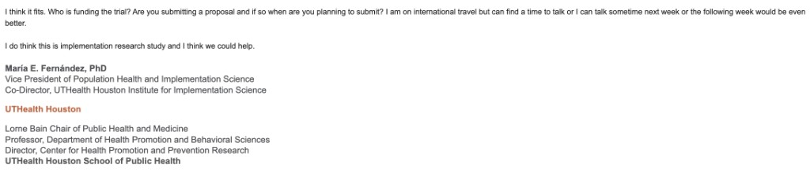
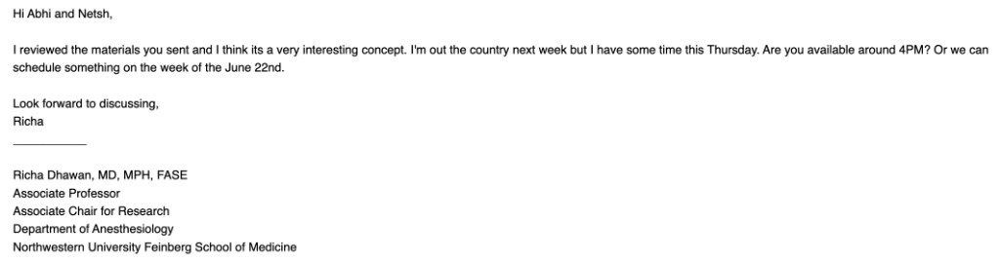
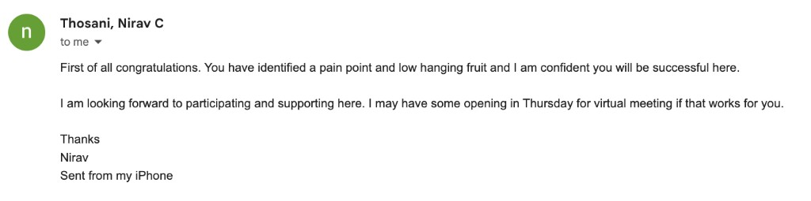
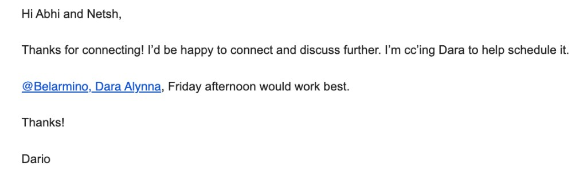

of patients find the informed consent process unsatisfactory and confusing.
PMCID: PMC3854804
80%
of medical information is forgotten immediately by patients.
PMCID: PMC539473
...and providers pay the price
1 in 5
readmissions are preventable, costing ~$300M annually.
PMCID: PMC8044735
$37/min
cost of OR time. Cancellations directly erode surgical revenue.
PMCID: PMC5875376
Root Cause
The Deeper Problem: Perioperative Care is Broken
The Black Box
Patient readiness + recovery is a black box.
Disconnected Workflows
Disconnected + fragmented tools.
Reactive, Not Proactive
Providers are then subjected to be reactive, spend time chasing information, and reacting to avoidable situations.
The Solution
How VeraCare Changes the Procedural Flow
Every step delivered through phone and SMS — no app, no portal
SMS
PHONE
SMS
SMS
SMS + Q&A
Scheduling
Education Call
Pre-Op Prep
Day of Surgery
Recovery
Confirms contact, maps plan to patient automatically
Walks through procedure with teach-back questions
Timed reminders for meds, Rx, showers, fasting
Morning safety check before arrival
Daily check-ins, drain tracking, grounded Q&A
Our Edge
VeraCare meets patients where they are
No app to download, no portal to log into — just a helpful text thread in your practice's voice
9:41 AMDr. Jejurikar's Office
Hi Maria, this is Dr. Jejurikar's office at Midwest Plastic Surgery. I'll help you stay on track before and after your tummy tuck with reminders by text. Is this the best number to reach you?
Yes it is!
Hi Maria, starting today please stop ibuprofen, aspirin, and fish oil until after surgery. Tylenol is fine if you need something. Let me know if you take any of these regularly.
Done, stopped all of them
Good morning Maria. Quick safety check: were you able to stay fasting since last night?
Yes, all good!
Message...
Adaptive Readiness + Recovery Tracking
Real-time visibility into patient preparation and recovery milestones.
Adaptive Communication / Outreach
Outreach that adapts to patient engagement and escalates when needed.
Adaptive Scheduling Support
Readiness data drives smarter scheduling and fewer cancellations.
Landscape
Competitive Landscape
VeraCare bridges perioperative operations with real-world patient behavior outside the hospital.
▲Patient Behavior & Activation▼
◀ Perioperative Operations ▶
VeraCare
Memora
Wellth
Framewise
Fabric
Luma
SeamlessMD
Force
Twistle
GetWell
Qventus
LeanTaaS
Apella
Caresyntax
Opmed.ai
Value
Quantified patient readiness and recovery creates real operational, clinical, and legal value
Better Outcomes
Proactive support throughout the perioperative journey drives better patient outcomes.
Reduced Delays & Cancellations
Catches readiness issues earlier, reducing same-day cancellations and underutilized OR time.
Reduced Readmission Risk
Recovery tracking gives visibility into patient progress.
Liability & Claims Support
Evidenced records of what the patient was told, shown, completed, and what outreach occurred. Supports claims appeals.
Proprietary Data Moat
The moat is operational intelligence from continuous visibility into the patient journey — powering all adaptive systems.
Opportunity
A Multi-Billion Dollar Perioperative Administration Market
Defensible growth across U.S. surgical operations and perioperative management
TAM
SAM
SOM
TAM
$17.6B
Annual administrative pain across U.S. perioperative sites — driven by preventable readmissions, cancellations, and first-case delays across community hospitals and ASCs.
SAM
$3.59B
Core U.S. software opportunity across 6,436 ASCs and 5,121 community hospitals, assuming future-state contract values of $200K per ASC and $450K per hospital.
SOM
$95M–$212.5M ARR
Attainable near-to-mid-term revenue: 250–500 ASCs and 100–250 hospitals.
Strategy
Go-To-Market: 18-Month Path to Full Operations
Here Now
▼
May 2026
Aug 2026
Sep 2026
Apr 2027
Oct 2027
MVP Completed
2
Clinical Trials
Awaiting IRB approval at Carle & Baylor Schools of Medicine
Data collection & stakeholder exposure upon approval
3
Pilots
Implementing in 1 clinic, waiting on 2nd implementation
Live product validation with real surgical workflows
Commercial Sales
5 paying customers converted from waitlist
Single-physician → multi-physician centers
4
5
Evidence & Trust
8 hospitals conducting trials & publishing
Build clinical evidence across specialties
6
Scale
Build team & org infrastructure
7
Non-Linear Growth
40 clinics represented across the U.S.
Expand sales reach & connect with more customers
8
Acquire Hospital Customers
3–5 hospitals as paying customers
Leverage trials & case studies for enterprise sales
Business Model
Commercial Model & Pricing Framework
Meaningful platform contracts with included episode volume; usage and add-ons expand revenue as workflow depth and scale increase
Contract Structure
Clinic
ASC / Multi
Hospital
Enterprise
Implementation
Workflow design, setup, training, launch
$5k–$15k
$15k–$40k
$40k–$150k
$100k–$300k+
Platform License ARR
Engine, dashboard, audit, reporting, support
$25k–$45k
$50k–$100k
$150k–$300k
$400k–$1M+
Included Volume
Baseline episodes in annual contract
~1,000
~3,000
~8,000
Negotiated pool
Overage / Deeper Workflow
Above included volume or intensive tiers
~$4–$8 / ep
~$4–$8 / ep
~$3–$7 / ep
~$2.50–$6 / ep
Add-ons
Translation, integrations / SSO / API, analytics, governance, premium support
+$10k–$250k+ ARR
Unit Economics
Variable Delivery Cost
$0.50–$2.50
/ episode
Gross Margin
Early
~55–65%
At scale
~70–80%
Disclaimer
VeraCare is early stage. Pricing, contract design, and reimbursement strategy will evolve as we work with pilot clinics, collect deployment data, and run clinical studies.
Target Market
Who We Serve
Built for high-throughput procedure settings
Surgical Facilities
Ambulatory Surgery Centers (ASCs)
Hospital Operating Rooms (ORs)
Same-day Surgery Units
Specialty Surgical Hospitals
Interventional & Lab Suites
Cath Labs & EP Labs
Interventional Radiology
Vascular & Endovascular
Bronchoscopy Suites
Specialty Outpatient Centers
GI/Endoscopy & Ophthalmology
Ortho/Spine & Pain Management
Urology, ENT, & OB/GYN
Plastics & Mohs Surgery
Procedural Networks & Operators
Multi-site ASC Operators
Specialty Management (MSOs)
Large Specialty Groups
Multi-site Procedure Centers
Traction
Early Validation & Market Pull
Customer demand is forming ahead of launch — we're not pushing product, clinics are pulling us in
30
Clinic Conversations
Deep discovery across clinical and administrative stakeholders
2
Pilots Launching
Implementing in 1 clinic now, 2nd implementation in progress
2
University Studies
Running studies at large university health systems — collecting clinical data
Multi-Stakeholder Engagement Across the Care Ecosystem
Physicians
Clinical workflow validation
Nurses
Care coordination needs
Administrators
Operational & ROI alignment
Receptionists
Front-desk workflow pain points
Physician Demand
What Doctors Are Saying
Unprompted enthusiasm from clinicians and researchers at leading health systems after seeing VeraCare




Who We Are
The Team
A
'">
Abhinav
Co-Founder
Molecular Biology + Computer Science @ UIUC
ML research/engineering & app dev @ Ramona Optics + Feinberg SOM
ML with genomics datasets @ Feinberg SOM
Experience building ML models, big data analysis apps, and clinical workflows
Clinical experience & surgery intern @ TMC/Baylor
N
'">
Netsh
Co-Founder
Data Science + Finance @ UIUC
Healthcare Private Equity @ Infinitive Capital
Data Science Intern @ BMO Financial Group
Operational knowledge combined with business background
Extensive AI engineering and implementation experience
R
'">
Ramiro Fernandez II, MD
Principal Clinical Advisor
Baylor · Northwestern · Cleveland Clinic
Leading thoracic surgeon & lung transplant specialist with deep perioperative care expertise
Fellowship-trained across three of the nation's top academic medical centers
Bridges clinical excellence, research leadership, and surgical innovation to guide VeraCare's vision
Clinical Network
Advisor Network
A credible clinical support network spanning training levels and care settings
Medical Student Collaborators
Kaviamuthan Kanakaraju
Carle Illinois College of Medicine
Engineering-integrated medical training with deep exposure to health-tech innovation
Senthooran Kalidoss
UChicago Pritzker School of Medicine
Clinical perspective from one of the nation's top research-driven medical schools
Doctor Advisors
Dr. Mallika Rajendran, MD
Obstetrics & Gynecology
Advice on hospital systems, large hospital operations & procedures
Jayakrishna Chintanaboina, MD, MPH, FASGE
Interventional Gastroenterologist
Advice on private clinic operations & procedural workflows
Dr. Nhila Jagadeesan, MD
Internist · Physician Advisor
Internal medicine perspective on care coordination & patient management
Aishwarya Reddy
Northwestern · PGY-1 Resident
Frontline perspective on perioperative workflows, patient handoffs & care coordination
2 Medical Students
4 Doctor Advisors
Spanning hospitals, private clinics, & academic medicine